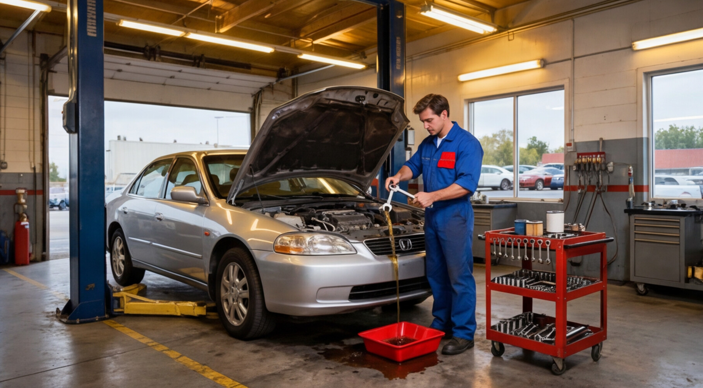

How Often Should You Service Your Car? A Complete Maintenance Schedule
Regular maintenance helps keep your vehicle safe, efficient, and reliable. Here’s a complete car maintenance schedule by mileage and service interval.

Regular car servicing is essential for keeping your vehicle safe, efficient, and reliable. While many drivers only take their cars to a mechanic when something goes wrong, routine maintenance helps prevent serious problems and costly repairs.
Understanding how often you should service your car allows you to maintain optimal vehicle performance and extend the lifespan of your engine and components.
The exact service schedule depends on factors such as:
- Vehicle make and model
- Driving conditions
- Mileage
- Manufacturer recommendations
However, most cars follow a general maintenance schedule based on mileage or time intervals. This guide explains what services your vehicle typically needs at different mileage milestones.
Why Regular Car Servicing Is Important
Routine car servicing plays a crucial role in keeping your vehicle running smoothly. Skipping maintenance may save money in the short term, but it often leads to expensive repairs later.
Regular servicing helps ensure that critical components such as the engine, brakes, and transmission function properly.
Key Benefits of Regular Car Maintenance
Extends vehicle lifespan. Proper maintenance reduces wear and tear on important components, allowing your vehicle to run efficiently for many years.
Improves fuel efficiency. A well-maintained engine burns fuel more efficiently, helping you save money at the pump.
Prevents costly repairs. Routine inspections can detect minor issues early before they turn into expensive mechanical failures.
Enhances safety. Regular brake checks, tire inspections, and fluid monitoring help keep you and your passengers safe on the road.
Increases resale value. Cars with documented maintenance records usually have higher resale value and attract more buyers.

Basic Car Maintenance Every 5,000–7,500 Miles
Most manufacturers recommend performing basic maintenance every 5,000 to 7,500 miles. This interval is considered a standard service period for many vehicles.
Common maintenance tasks include:
- Engine oil change
- Oil filter replacement
- Tire pressure inspection
- Tire rotation
- Brake system inspection
- Fluid level check including coolant, brake fluid, transmission fluid, and windshield washer fluid
Why Oil Changes Are Important
Engine oil lubricates moving parts inside the engine and prevents overheating caused by friction.
Over time, engine oil becomes contaminated with dirt and debris. If oil is not replaced regularly, it can lead to engine wear and serious mechanical damage.
Car Maintenance Every 15,000–30,000 Miles
As your vehicle accumulates mileage, additional components require inspection or replacement. At this stage, a more thorough service check is typically recommended.
Services often performed include:
- Engine air filter replacement
- Cabin air filter replacement
- Battery condition check
- Brake system inspection
- Cooling system inspection
- Fuel system inspection
Importance of Air Filters
Air filters prevent dust, debris, and contaminants from entering the engine.
A clogged air filter can:
- Reduce engine power
- Decrease fuel efficiency
- Cause rough engine performance
Replacing the air filter regularly helps maintain optimal engine performance.
Major Vehicle Service at 60,000 Miles
Around 60,000 miles, your vehicle typically requires more extensive maintenance. This service interval often includes replacing fluids and components that wear out over time.
Major maintenance tasks may include:
- Transmission fluid replacement
- Spark plug replacement
- Brake fluid replacement
- Timing belt inspection
- Suspension system inspection
- Cooling system service
Why Transmission Maintenance Matters
Transmission fluid lubricates the gears inside the transmission system.
Old or degraded transmission fluid can cause:
- Rough shifting
- Slipping gears
- Transmission overheating
Replacing the fluid at recommended intervals helps prevent expensive transmission repairs.
Important Maintenance at 100,000 Miles
Reaching 100,000 miles is an important milestone for most vehicles. At this stage, deeper inspections and preventative replacements are often recommended.
Services typically performed include:
- Timing belt replacement if applicable
- Cooling system flush
- Fuel system cleaning
- Exhaust system inspection
- Engine performance diagnostics
Proper maintenance at this stage ensures your car continues to run reliably beyond 150,000 to 200,000 miles. Many modern vehicles can last far longer with consistent servicing.
Important: While general maintenance schedules are helpful, your owner’s manual contains the most accurate servicing recommendations for your specific vehicle.
Signs Your Car Needs Immediate Service
Even if you follow a regular maintenance schedule, your vehicle may show signs that it needs service sooner. Ignoring these warning signals can lead to severe mechanical damage.
Warning signs to watch for include:
- Unusual engine noises such as knocking, ticking, or grinding
- Dashboard warning lights
- Difficulty starting the car
- Reduced fuel efficiency
- Vibrations while driving
Tips to Extend Your Car’s Lifespan
In addition to regular servicing, several good driving habits can help extend the life of your vehicle.
- Avoid aggressive acceleration and braking
- Maintain proper tire pressure
- Replace worn tires promptly
- Keep your engine clean
- Check fluid levels regularly
- Address warning lights immediately
Proactively caring for your vehicle can significantly reduce the risk of unexpected breakdowns.
Frequently Asked Questions
How often should you service your car?
Most vehicles should be serviced every 5,000 to 7,500 miles or at least once every six months, depending on driving conditions and manufacturer recommendations.
Is it okay to skip a car service?
Skipping scheduled maintenance can lead to engine wear, reduced fuel efficiency, and costly mechanical failures.
What is included in a basic car service?
A basic service typically includes an oil change, oil filter replacement, tire rotation, brake inspection, and fluid checks.
How long does a car service take?
Routine maintenance services usually take 1–2 hours, while major services may take longer.
Can regular maintenance really extend car life?
Yes. Vehicles that receive consistent maintenance often last 200,000 miles or more.
Final Thoughts
Regular car servicing is one of the best investments you can make in your vehicle. Following a consistent maintenance schedule helps keep your car safe, efficient, and reliable.
By performing routine inspections, replacing worn components, and addressing issues early, you can avoid costly repairs and extend your vehicle’s lifespan.
A well-maintained car not only performs better but also provides peace of mind every time you get behind the wheel.
Next step: Check your owner’s manual and schedule your next service based on your current mileage and driving habits.